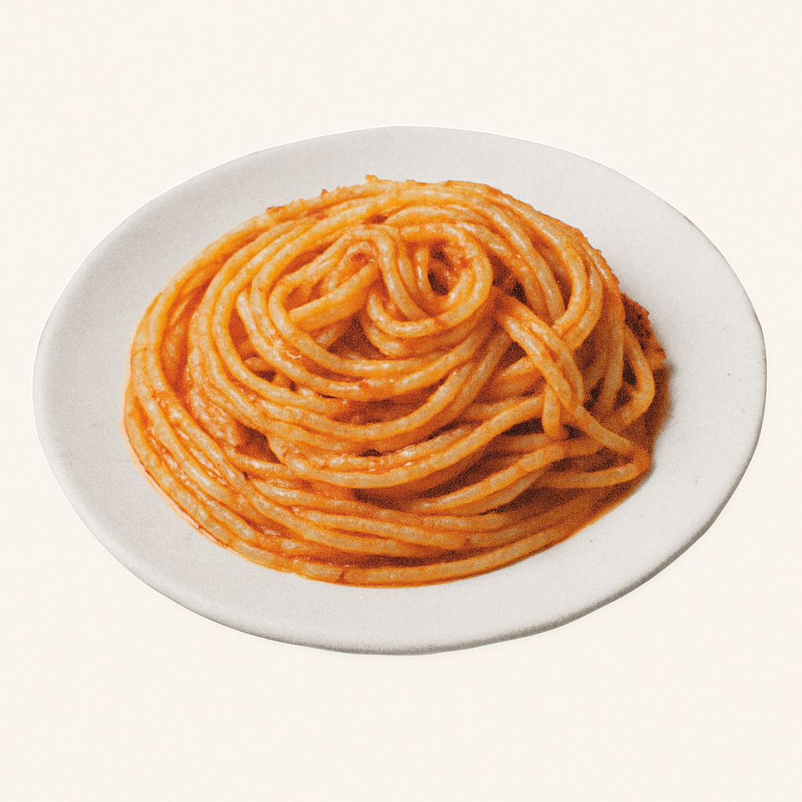
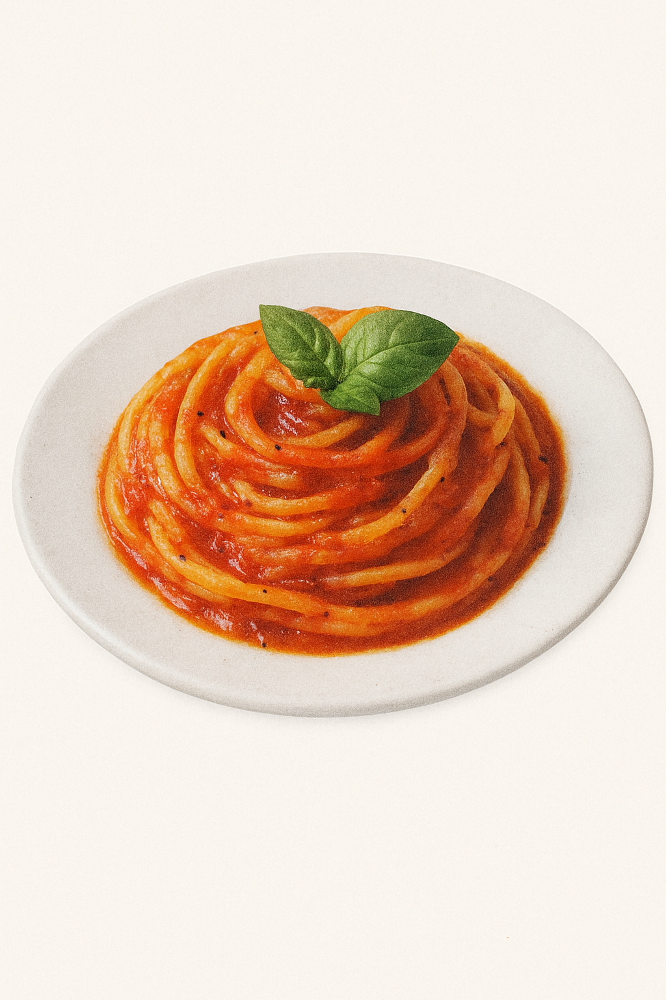
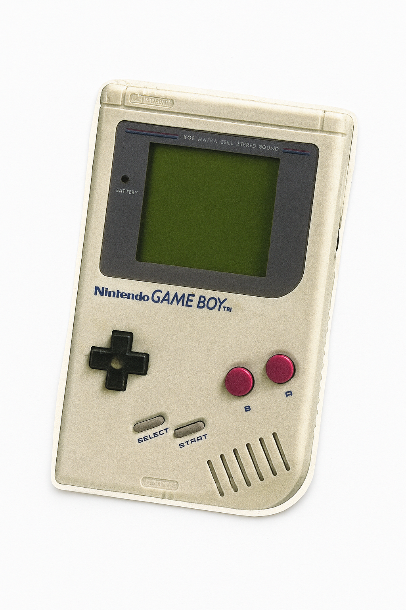
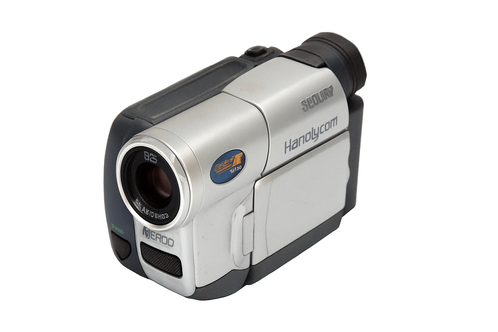
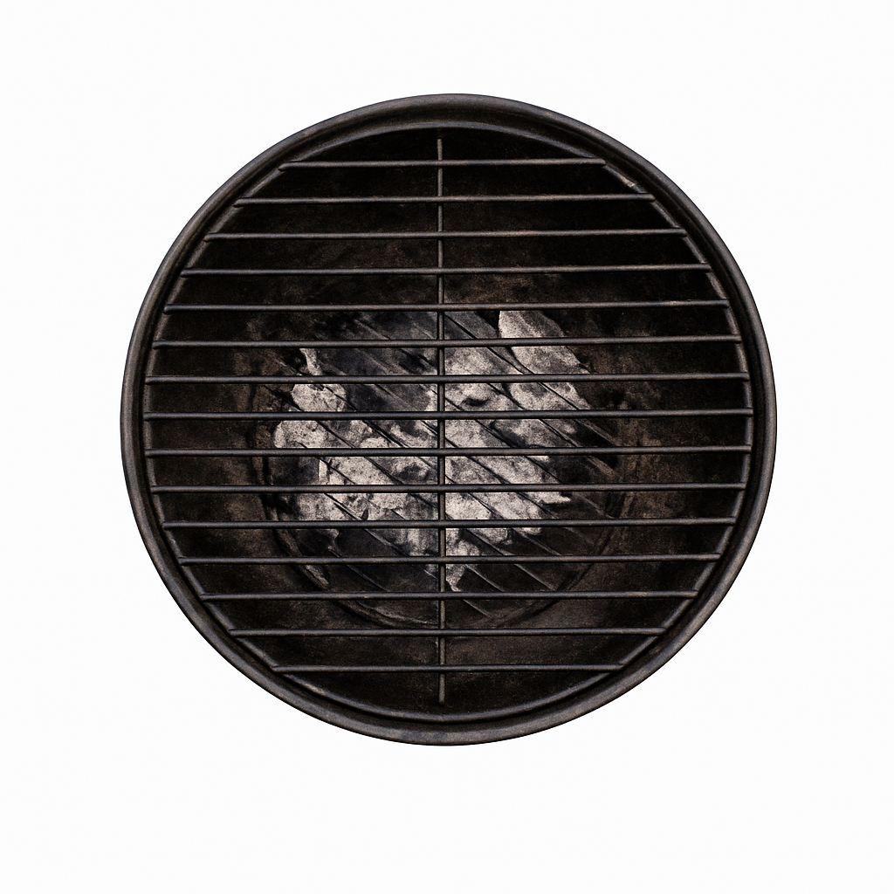
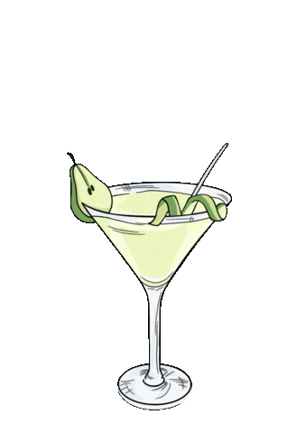
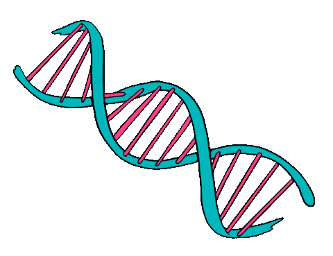

I talk fast
I edit
faster
Showreel
Featured Projects
Select an object to view

Podcast + science edits about hot/cold exposure and metabolism.
Travel app concept for explorers: routes, saves, and city moodboards.

Weber BBQ video cuts with sizzling transitions and grill-night energy.

Fast phone-game reels built for retention, loops, and tap-to-rewatch pacing.

Explainer video in motion-graphics style: bold type, clean icons, fast clarity.

Cocktail photo selection with glossy flash vibes and retro nightlife color.

IG reels for a chef profile: knife rhythm, plating moments, and kitchen punchlines.

Event graphics pack with punchy typography, stickers, and loud retro layouts.
design_services